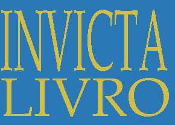
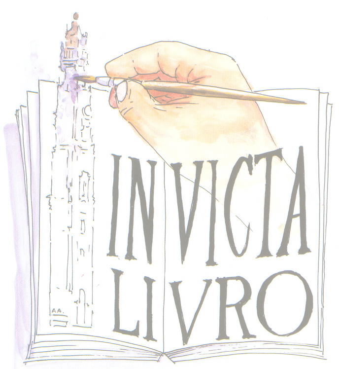
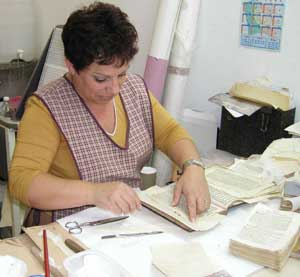
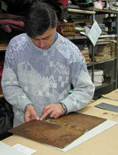
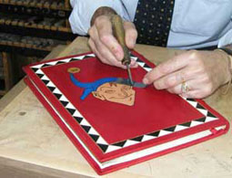

Encadernar.
Dar forma e proteção a um livro, respeitando o seu caráter.
Encadernação
Preservar o que já tem história. Dar forma ao que ainda vai ganhar a sua. Conheça o ofício da Invicta Livro, no Porto.
Descobrir o ofício
Dar forma e proteção a um livro, respeitando o seu caráter.
EncadernaçãoObservar o papel e a encadernação para estudar uma intervenção.
RestauroO trabalho de acabamento e o detalhe na superfície do livro.
DouradosA Invicta Livro apresenta um trabalho manual de encadernação, restauro de papel e de encadernações antigas, e criação de encadernações contemporâneas.
Cada volume traz uma história e um estado de conservação próprios. O primeiro passo é conhecê-lo.
Falar com a oficinaFotografias do arquivo publicado pela Invicta Livro. Um registo do trabalho manual, sem data indicada.


